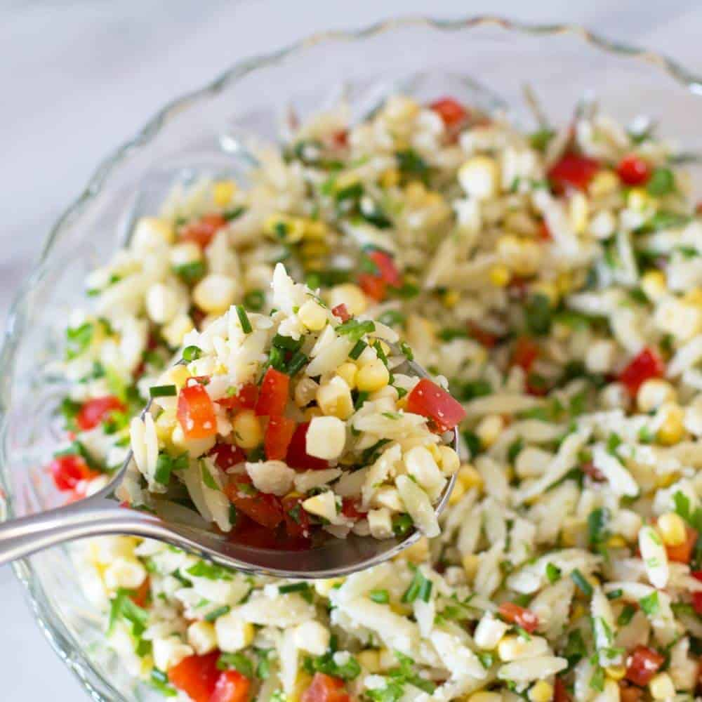

A Rainbow Orzo Salad is a colorful and nutritious dish made with orzo pasta and a variety of colorful vegetables. The dish is aptly named for the rainbow of colors it contains, thanks to the addition of a variety of bell peppers, cherry tomatoes, and baby spinach. To make the salad, cooked orzo pasta is combined with the diced bell peppers, red onion, cherry tomatoes, baby spinach, and Kalamata olives. A simple dressing made with olive oil, red wine vinegar, garlic, oregano, salt, and pepper is poured over the top and mixed in to add flavor and moisture.